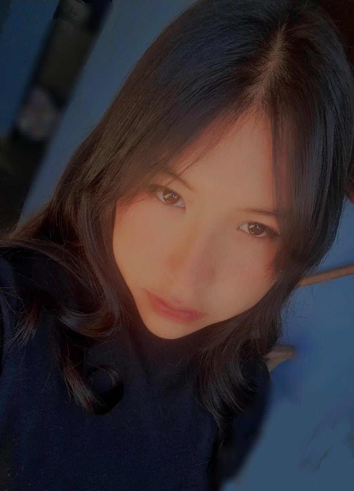

Nicol Valentina Roque Estrada
16 años, Estudiante, Toluca CBT4
Nicol Valentina Roque Estrada
16 años, Estudiante, Toluca CBT4
MIS METAS
mi primer sueño a lograr es ingresar a la universidad y poder estudiar la carrera de medico cirujano, poder aprender lo mejor y ser una gran cirujana, conseguir por mi misma la moto que desde niña eh querido,
Dentro de mis metas esta el poder viajar a diversos lugares en compañía de mis papás al igual que poder construir el hogar que quiero, el ser una buena cirujana y poder ayudar a las personas, me encantaría en algún momento poder tener una clínica propia, me gustaría aprender y practicar más deportes en el futuro.
Al igual que explorar diferentes campos profesionales y establecer metas relacionadas con el trabajo, como obtener un empleo en un área específica, comenzar un negocio propio o adquirir habilidades relevantes para el mercado laboral. En mi persona me gustaría trabajar en el crecimiento personal y el bienestar emocional, estableciendo metas relacionadas con el autocuidado, la autoestima y el desarrollo de habilidades sociales. Planificar viajes o aventuras para explorar nuevas culturas, aprender idiomas o participar en programas de intercambio cultural. Establecer metas relacionadas con el ejercicio regular, la alimentación saludable y el mantenimiento de un estilo de vida activo, aprender sobre la gestión del dinero y establecer metas financieras a corto y largo plazo invertir en el futuro o establecer un fondo de emergencia, cultivar intereses creativos y pasatiempos, como la música, el arte, la escritura o el deporte, estableciendo metas para mejorar en esas áreas y explorar nuevas formas de expresión, mejorar las relaciones significativas con amigos, familiares y compañeros, estableciendo metas para comunicarse de manera efectiva, resolver conflictos y mantener conexiones positivas.